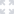

<section class="main-container-right">
  <div class="searchbar">
    <div class="d-flex align-items-left">
      <h1>Dashboard</h1>
      <app-dashboard-library (confirmWidget)="confirmWidgetFunction($event)"
                             (widgetValue)="getIndex($event)"></app-dashboard-library>
    </div>
  </div>

  <!--Loader-->
  <lottie-animation-view *ngIf="!viewEnd && widgets.length === 0"
                         [options]="lottieConfig"
                         [width]="300"
                         [height]="400">
  </lottie-animation-view>

  <!--In case there are no widgets present-->
    <div class="no-content" *ngIf="viewEnd && widgets.length === 0">
    <lottie-animation-view
                           [options]="noWidgets"
                           [width]="700"
                           [height]="410">
    </lottie-animation-view>
        <div class="no-content-text">
            <h4>WELCOME TO YOUR DASHBOARD!</h4>

            <span>Please click the “Add Widget” button on the top left
        of the page to add widgets on your dashboard.</span>
        </div>
    </div>

  <!--Dashboard-->
  <div class="grid" *ngIf="widgets.length > 0">
    <div class="grid-item"
         *ngFor="let widget of widgets; let i = index;"
         [class.large]="large[i] == 'large'"
         [class.default]="revert[i] == 'default'"
         [class.minimized]="mini[i] == 'mini'"
         [class.expand]="expand[i] == 'expand'"
         [id]="i">
      <div class="widget-content">
        <div class="d-flex justify-content-end">
                    <span *ngIf="optionResize == false && large[i] != 'large' && widget.expand"
                          (click)="gridShitLayout(i, 'large'); transformWidget(widget.id, widget.key, i)" class="maximize">
                        
                    </span>
          <span *ngIf="large[i] != null" (click)="gridShitLayout(i, 'default'); transformWidget('m', widget.key, i)" class="revert">
                        
                    </span>
          <span *ngIf="optionCollapse == false && mini[i] != 'mini'" (click)="gridShitLayout(i, 'mini');"
                class="minimize">
                        
                    </span>
          <span *ngIf="mini[i] != null"
                (click)="gridShitLayout(i, 'expand'); transformWidget('m', widget.key, i)" class="expand">
                        
                    </span>
          <!--TODO: Redo the remove function after Widget library is done-->
          <span (click)="remove(i); gridShitLayout(); gridShitLayout(i, 'default'); transformWidget('m', widget.key, i)" class="close_1">
                        
                    </span>
        </div>
        <app-widget-body
            class="grid-item-body"
            [widget]="widget"
            [indent]="i"
            [selectedWidget]="widget.key"
            [visible]=true
            (resizeGrid)="resizeGrid()"
            (selectedFilterItem)='addFilter($event, widget.id)'
            [widgetResize]="widgetResize"
            id={{i}}>
        </app-widget-body>
      </div>
      <div class="handle" [inlineSVG]="'assets/images/inline-svg/draganddrop.svg'"></div>
    </div>
  </div>
</section>

<div *ngIf="draggedWidgets === true" class="d-flex align-items-center notification"
     [ngClass]="{'closed': closeDialog == true}">
  <div class="question-title h3">Save widget changes?</div>
  <div class="modal-buttons d-flex justify-content-between p-0">
    <button class="btn btn-secondary" (click)="closePopUp()">No</button>
    <button class="btn btn-success" (click)="saveConfig()">Yes</button>
  </div>
</div>